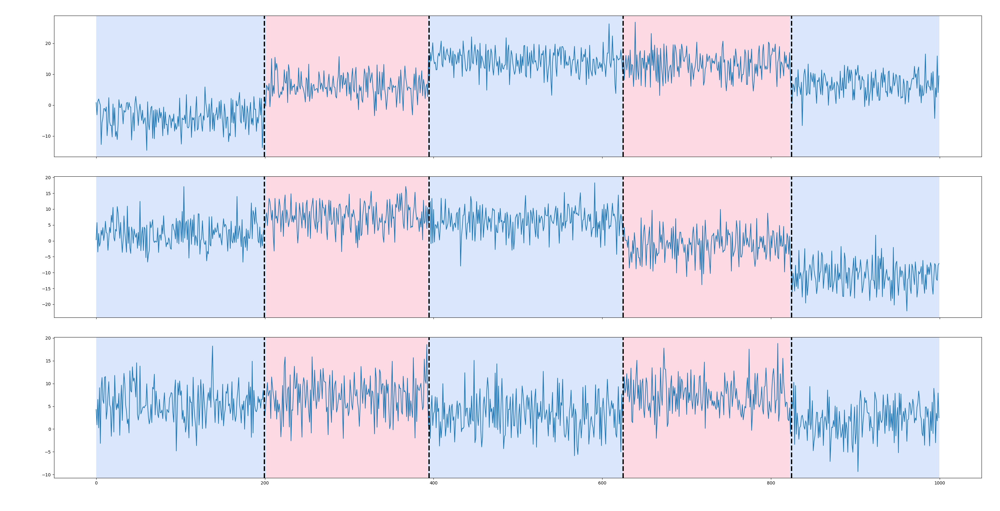

Welcome to ruptures#


ruptures is a Python library for off-line change point detection.
This package provides methods for the analysis and segmentation of non-stationary signals. Implemented algorithms include exact and approximate detection for various parametric and non-parametric models.
ruptures focuses on ease of use by providing a well-documented and consistent interface.
In addition, thanks to its modular structure, different algorithms and models can be connected and extended within this package.
How to cite. If you use ruptures in a scientific publication, we would appreciate citations to the following paper:
- C. Truong, L. Oudre, N. Vayatis. Selective review of offline change point detection methods. Signal Processing, 167:107299, 2020. [journal] [pdf]
Latest news#
-
Welcome to our new PhD student, Nicolas Cecchi! He will integrate new algorithms in ruptures and create tutorials and illustrative examples.
-
NASA uses ruptures! They monitor crops in California and Iran. We submitted an article, let's hope for the best!!
-
Jalilvand, E., Kumar, S.V., Haacker, E., Truong, C., Mahanama, S., 2024, Characterizing spatiotemporal variability in irrigation extent and timing through thermal remote sensing, submitted to Remote Sensing of Environment.
-
We have been contacted by CHELSEA FC to monitor players using ruptures. Stay tuned...
-
We use ruptures to understand the regulation of acetylcholine, an important neurotransmitter that plays a role in muscle contraction (involved in myasthenia gravis). Check out our work at the Journal of Physiology
-
They use ruptures to detect changes in classroom engagement and student participation in Japan. Check out their work
-
ruptures is part of a larger pipeline to observe Earth, in particular marine biodiversity. The authors use it to find change in the phytoplankton diversity. Check out their work
-
We work with Croatian crystallographers (hi Zoran Štefanić!) to understand protein motions using angular diagrams. We will keep you posted for our next joint publications.
-
Charles Truong presented ruptures at PyConDE & PyData Berlin 2024. Check out the video.
Basic usage#
(Please refer to the documentation for more advanced use.)
The following snippet creates a noisy piecewise constant signal, performs a penalized kernel change point detection and displays the results (alternating colors mark true regimes and dashed lines mark estimated change points).
import matplotlib.pyplot as plt
import ruptures as rpt
# generate signal
n_samples, dim, sigma = 1000, 3, 4
n_bkps = 4 # number of breakpoints
signal, bkps = rpt.pw_constant(n_samples, dim, n_bkps, noise_std=sigma)
# detection
algo = rpt.Pelt(model="rbf").fit(signal)
result = algo.predict(pen=10)
# display
rpt.display(signal, bkps, result)
plt.show()

General information#
Contact#
Concerning this package, its use and bugs, use the issue page of the ruptures repository. For other inquiries, you can contact me here.
Important links#
Dependencies and install#
Installation instructions can be found here.
Changelog#
See the changelog for a history of notable changes to ruptures.
Thanks to all our contributors#
License#
This project is under BSD license.
BSD 2-Clause License
Copyright (c) 2017-2022, ENS Paris-Saclay, CNRS
All rights reserved.
Redistribution and use in source and binary forms, with or without
modification, are permitted provided that the following conditions are met:
* Redistributions of source code must retain the above copyright notice, this
list of conditions and the following disclaimer.
* Redistributions in binary form must reproduce the above copyright notice,
this list of conditions and the following disclaimer in the documentation
and/or other materials provided with the distribution.
THIS SOFTWARE IS PROVIDED BY THE COPYRIGHT HOLDERS AND CONTRIBUTORS "AS IS"
AND ANY EXPRESS OR IMPLIED WARRANTIES, INCLUDING, BUT NOT LIMITED TO, THE
IMPLIED WARRANTIES OF MERCHANTABILITY AND FITNESS FOR A PARTICULAR PURPOSE ARE
DISCLAIMED. IN NO EVENT SHALL THE COPYRIGHT HOLDER OR CONTRIBUTORS BE LIABLE
FOR ANY DIRECT, INDIRECT, INCIDENTAL, SPECIAL, EXEMPLARY, OR CONSEQUENTIAL
DAMAGES (INCLUDING, BUT NOT LIMITED TO, PROCUREMENT OF SUBSTITUTE GOODS OR
SERVICES; LOSS OF USE, DATA, OR PROFITS; OR BUSINESS INTERRUPTION) HOWEVER
CAUSED AND ON ANY THEORY OF LIABILITY, WHETHER IN CONTRACT, STRICT LIABILITY,
OR TORT (INCLUDING NEGLIGENCE OR OTHERWISE) ARISING IN ANY WAY OUT OF THE USE
OF THIS SOFTWARE, EVEN IF ADVISED OF THE POSSIBILITY OF SUCH DAMAGE.